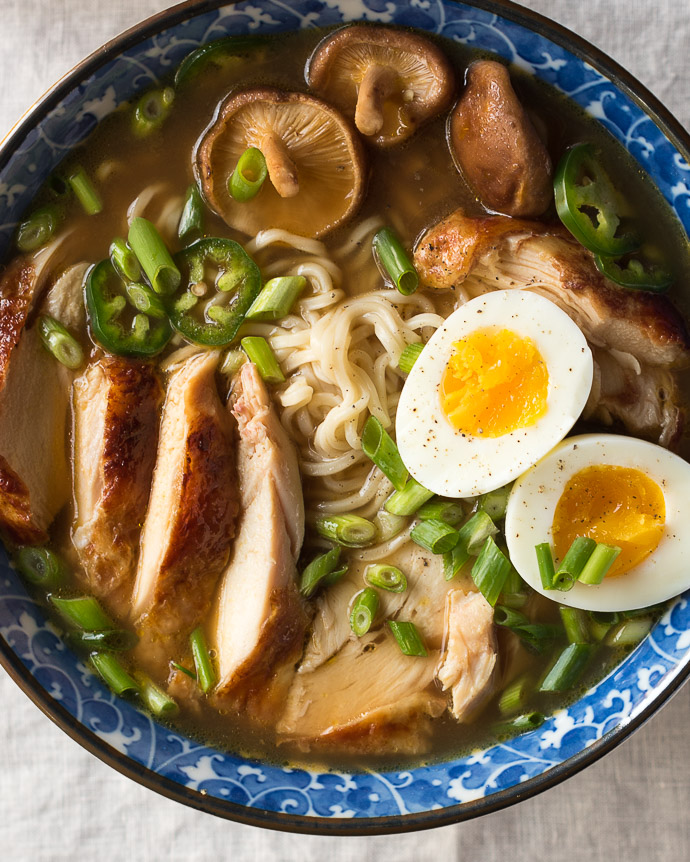

Easy homemade chicken ramen, with a flavorful broth, roasted chicken, fresh veggies, lots of noodles, and a soft cooked egg. Inspired by traditional Japanese ramen, but on the table in under an hour.

The Honey’s parents are American ex-pats living abroad in Tokyo, Japan, and while visiting them over the last seven or eight years, he’s collected dozens of favorite eateries throughout the city.
There’s the best izakaya in Kichijoji, serving up casual Japanese pub food, and countless kiten-zushi restaurants, where my English-speaking Honey can choose small plates of freshly-made sushi from a moving conveyor belt without having to order in Japanese.
He always makes sure to buy at least one Pocari Sweat from a vending machine (think Japanese gatorade), and of course, there’s his favorite ramen shop in Shinjuku, a tiny, crowded restaurant with a line out the door. Paintings of pigs adorn the walls, and big, steaming bowls of pork ramen are served to hungry patrons at a single bar counter.
Real Japanese ramen, the kind that my Honey tells stories about, takes years and great skill to perfect. I wanted to create a simple ramen noodle soup that reminded him of Japan, but could be made quickly, with ingredients on hand.
I opted for chicken instead of pork, but kept the rest of the ramen vibe somewhat traditional: a killer chicken soup base with garlic, ginger, shitake mushrooms and soy sauce, filled with squiggly ramen noodles and slices of succulent chicken, and topped with fresh spring onions and a soft-boiled egg.
My version is on the table in less than an hour - and half that if you opt for store-bought chicken - and while it might not be completely authentic, it’s a flavorful, comforting soup just in time for the unmistakably crisp, chilly autumn weather that these first days of October have ushered in.
Easy homemade chicken ramen, with a flavorful broth, roasted chicken, fresh veggies, lots of noodles, and a soft cooked egg. Inspired by traditional Japanese ramen, but on the table in under an hour.
COOK THE CHICKEN:
MAKE THE RAMEN BROTH:
MAKE THE SOFT-BOILED EGGS:
ASSEMBLE THE RAMEN BOWLS:
Ask your butcher to remove the rib bone from the chicken breasts (leaving the skin on), or use bone-in, skin-on chicken breasts and increase the oven roasting time 5-10 minutes, as needed. You can also cut your ramen prep time in half by using a store-bought whole rotisserie chicken, simply slice off as much as you wish, and add to the ramen.
Main page